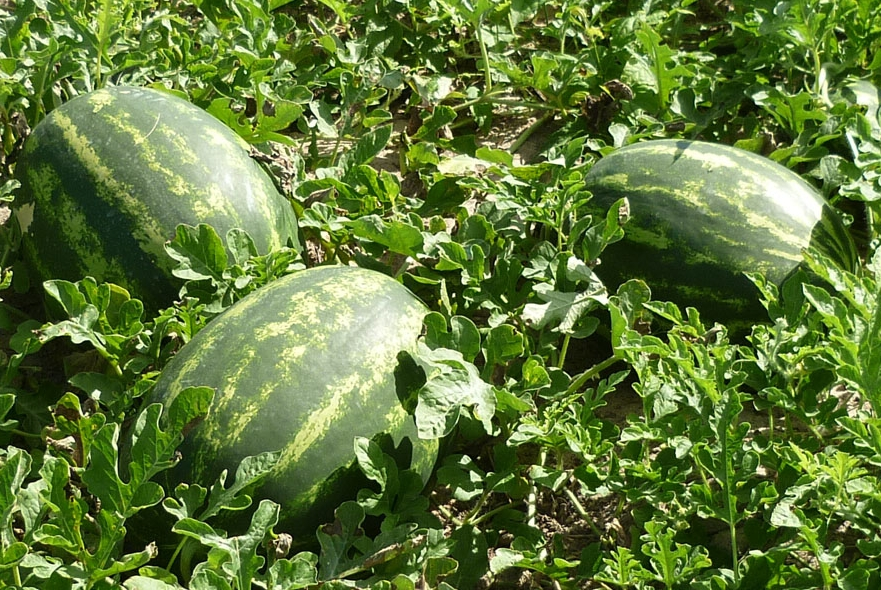

Para cada região, a época de plantio ocorre em diferentes períodos do ano, já que a época mais adequada é aquela em que durante todo o ciclo da cultura ocorrem as condições climáticas favoráveis, dependendo da localização e altitude. A época mais favorável para o plantio de melancia é a que apresenta temperaturas variando de 18 °C a 25 °C. Nesse contexto, nas regiões de clima frio, o plantio da melancia é feito de outubro a fevereiro; nas de clima ameno, de agosto a março, e nas regiões de clima quente, o ano todo, com uso da irrigação. Deve-se evitar, porém, as épocas de chuvas intensas.
As maiores regiões produtoras da cultura encontram-se em condições de baixa altitude, em razão do clima propício, seco e quente, inclusive durante a estação de inverno.
Utiliza-se geralmente o plantio em semeadura direta, gastando-se, em média, de 0,8 kg a 1 kg de sementes por hectare, semeando-se de 2 cm a 3 cm de profundidade e colocando-se de três a quatro sementes por cova.
Para acelerar e uniformizar a germinação pode-se fazer a imersão que se consiste em deixar as sementes em água a 30 ºC, por 4 horas. O semeio deve ser feito em solo úmido, para evitar a desidratação das sementes.
Outra forma de cultivo da melancia é o transplantio de mudas produzidas em recipientes próprios, tais como: bandejas de isopor, sacos plásticos ou copinhos feitos com jornal, porém, é necessário ter cuidado para não passar do momento exato do transplantio, que não deve exceder o período da emissão da primeira folha definitiva ao início da segunda.
A melancia atinge o ponto de colheita entre 28 a 45 dias após a fecundação das flores femininas ou hermafroditas. No Nordeste brasileiro, esse período corresponde a 65-75 dias após o plantio. Sendo assim, o ponto de colheita varia muito de acordo com o clima e o método da cultivação.
Entre os principais paises produtores mundiais de melancia destacam-se China (63,5%), Turquia (4,1%), Irã (3,9%), Brasil (2,3%), Estados Unidos (2,1%) e Egito (0,8%).